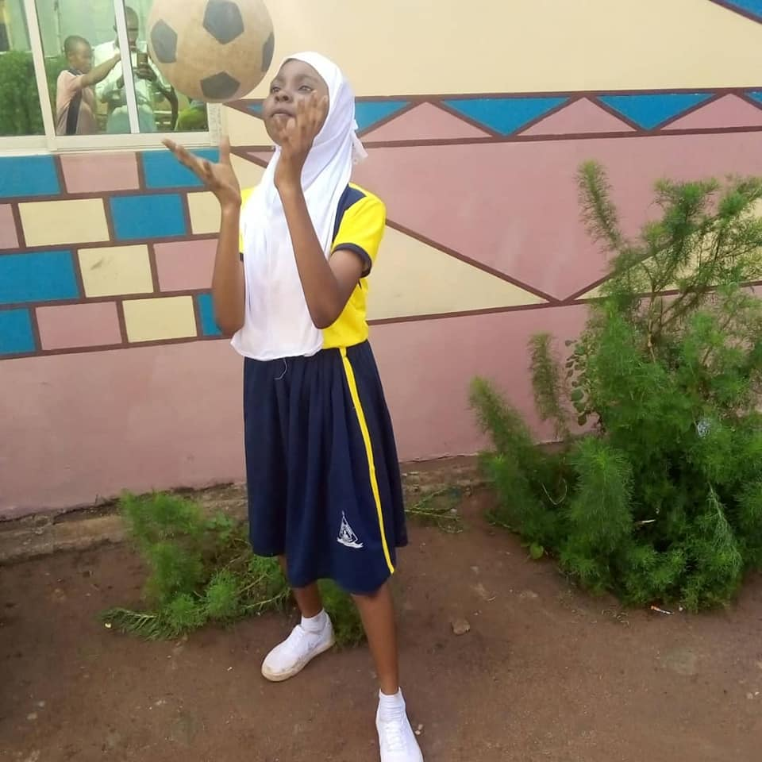

Discover our School
Al-Bayyan Schools was founded by Al-BayyanFoundation. The school commenced with 10 students in Nusery/Primary School in August 6th, 2013. The school was founded to compliment previous efforts at providing balanced education to students in the nusery/primary sections and to provide a academic programmes in an Islamic environment, preparing students for post-primary school education while inculcating Islamic values in them.
